What is PHP?
- PHP is an acronym for "PHP: Hypertext Preprocessor"
- PHP is a widely-used, open source scripting language
- PHP scripts are executed on the server
- PHP is free to download and use
What is a PHP File?
- PHP files can contain text, HTML, CSS, JavaScript, and PHP code
- PHP code is executed on the server, and the result is returned to the browser as plain HTML
- PHP files have extension "
.php"
What Can PHP Do?
- PHP can generate dynamic page content
- PHP can create, open, read, write, delete, and close files on the server
- PHP can collect form data
- PHP can send and receive cookies
- PHP can add, delete, modify data in your database
- PHP can be used to control user-access
- PHP can encrypt data
Why PHP?
- PHP runs on various platforms (Windows, Linux, Unix, Mac OS X, etc.)
- PHP is compatible with almost all servers used today (Apache, IIS, etc.)
- PHP supports a wide range of databases
- PHP is free. Download it from the official PHP resource: www.php.net
- PHP is easy to learn and runs efficiently on the server side
Static Websites
Static websites are built with fixed content that doesn’t change dynamically when a user interacts with it. They’re made using HTML, CSS, and sometimes JavaScript to display information, but they don’t require a backend server or database, making them lightweight and fast.
Key Features:
- Fixed Content: Content is pre-built and doesn’t change based on user input.
- No Backend Needed: Doesn’t require a server or database.
- Fast Loading: Static sites load quickly since they only need to fetch the content and design from files, not a database.
- Easy to Host: They can be hosted anywhere, from GitHub Pages to Netlify, with minimal setup.
Benefits:
- Low Cost: Hosting is often free or inexpensive.
- Security: Without a backend, there’s less risk of database hacks.
- Performance: Fast loading times due to fewer server requests.
Common Use Cases:
- Portfolio websites
- Documentation pages
- Blogs (with static site generators)
- Company landing pages
Tools for Creating Static Sites:
- HTML & CSS: Basic building blocks of a static site.
- Static Site Generators: Tools like Jekyll, Hugo, and Gatsby that convert content into static HTML pages.
- Deployment Platforms: Netlify, Vercel, GitHub Pages.
If you’re planning to build a simple site for something like CodeWhere, a static setup might work well unless you need user interaction or real-time updates.
Dynamic Websites
Dynamic websites are built to display content that changes in response to user interactions or other factors, like time or location. They rely on both front-end and back-end technologies to fetch and display up-to-date information, making them ideal for more complex applications requiring user engagement and interaction.
Key Features:
- Interactive Content: Content changes based on user input or other variables.
- Backend Required: Requires a server and often a database to process and serve content.
- Data-Driven: Content can be dynamically generated based on data from databases or APIs.
- Personalized Experience: Users can have personalized content, such as account information, recommendations, or messages.
Benefits:
- User Engagement: Dynamic websites offer interactive features, increasing user engagement.
- Scalability: Suitable for applications that need regular updates, like news, e-commerce, or social media platforms.
- Personalization: Tailored content based on user preferences, increasing relevance and engagement.
Common Use Cases:
- Online stores
- Social media platforms
- Content management systems (e.g., WordPress)
- Interactive web applications (e.g., Google Docs, project management tools)
Technologies for Building Dynamic Sites:
- Server-Side Languages: PHP, Node.js, Python (e.g., Django, Flask), Ruby, Java (e.g., Spring).
- Databases: MySQL, MongoDB, PostgreSQL, Firebase.
- Front-End Frameworks: React, Vue, Angular for creating dynamic user interfaces.
- APIs: Allows data exchange between the server and client for real-time updates.
Dynamic websites are best suited for applications that need frequent content updates, real-time data, or user-specific experiences. If CodeWhere is expected to have personalized features or interactions, a dynamic site approach may be ideal.
Introduction to Web Servers
A web server is a system that hosts, processes, and delivers web content to users. When users access a website through a browser, their requests are sent to a web server, which processes them and returns the necessary files (HTML, CSS, JavaScript, images, etc.) to display the requested web pages.
Key Functions of a Web Server:
- Hosting Content: Web servers store website files and make them accessible over the internet.
- Handling Requests: They receive HTTP requests from clients (browsers) and respond with the appropriate resources.
- Security: Web servers can provide security features like SSL encryption to protect data during transmission.
- Resource Management: They manage network traffic, bandwidth, and resources to ensure smooth performance.
Examples of Web Servers:
- Apache HTTP Server: An open-source server known for its stability, flexibility, and popularity.
- Nginx: Known for its performance, it is widely used for handling high-traffic sites.
- Microsoft IIS: Internet Information Services, a server designed for Windows environments.
- LiteSpeed: A performance-focused server, often used as an alternative to Apache.
How a Web Server Works:
- Request: The browser sends a request for a specific page or resource (e.g.,
example.com) via HTTP/HTTPS. - Processing: The server receives the request, locates the requested file, and processes any necessary server-side scripts.
- Response: The server responds with the requested file, which the browser then displays as a webpage.
Benefits of Using a Web Server:
- Accessibility: Makes content available online for users worldwide.
- Reliability: Provides stable access to resources and can handle multiple requests.
- Customization: Allows configurations to optimize performance, security, and functionality.
In essence, a web server acts as the backbone of the internet, connecting users to the content and applications they need. Without web servers, online content delivery would not be possible.
Introduction to Local Servers
A local server is a server environment hosted on your own computer. It allows developers to build, test, and run applications locally without needing to deploy them online. Local servers are commonly used for development and testing purposes.
Key Functions of a Local Server:
- Local Development: Allows developers to build and test applications without needing an internet connection.
- Speed: Since everything is running locally, response times are faster compared to remote servers.
- Environment Control: Developers have complete control over the environment, including versions of software, databases, and configurations.
- Error Testing: Enables testing of applications in a controlled environment before going live.
Common Local Server Software:
- XAMPP: A package that includes Apache, MySQL, PHP, and Perl, commonly used for PHP development.
- WAMP: A Windows-based alternative to XAMPP, with Apache, MySQL, and PHP.
- MAMP: A local server environment for macOS, including Apache, MySQL, and PHP.
- Local by Flywheel: A tool designed for WordPress development with easy local setup and configurations.
- Node.js: Commonly used to run JavaScript-based applications locally for full-stack development.
How to Set Up a Local Server:
- Download: Choose and download a local server software package (e.g., XAMPP, WAMP, MAMP).
- Install: Follow the installation instructions and set up the server environment.
- Run Server: Start the local server software, which will open a control panel to manage services like Apache and MySQL.
- Access: Once running, you can access the local server by typing
localhostor127.0.0.1in a browser.
Benefits of Using a Local Server:
- No Internet Required: Development can continue offline.
- Privacy: Local development keeps projects private until they are ready for deployment.
- Cost-Effective: Free to set up, with no hosting fees for local development.
Local servers are invaluable for developers as they provide a risk-free environment to test, debug, and improve applications before deploying them online.
Introduction to Remote Servers
A remote server is a computer or server located in a remote data center, designed to store, process, and serve data to users over the internet. Unlike local servers, which operate on a developer’s personal computer, remote servers are accessed online and provide services or resources to multiple users across different locations.
Key Functions of a Remote Server:
- Data Hosting: Stores files, databases, and applications, allowing users to access them from anywhere.
- Handling Requests: Processes user requests and delivers content or application data in real time.
- High Availability: Often configured to run 24/7 to serve users around the clock.
- Security and Backups: Provides robust security, encryption, and automated backups to protect data.
Types of Remote Servers:
- Web Servers: Servers like Apache or Nginx that deliver websites and applications to users over the internet.
- Application Servers: Host applications for remote access, often running Java, .NET, or PHP applications.
- Database Servers: Store and manage databases that applications can query to retrieve information.
- File Servers: Centralized storage for file sharing and retrieval.
- Cloud Servers: Virtual servers hosted in cloud environments, such as AWS, Azure, or Google Cloud.
Benefits of Using a Remote Server:
- Accessibility: Accessible from anywhere with an internet connection.
- Scalability: Resources can be scaled up or down depending on the user or application needs.
- Cost-Effectiveness: No need for on-premise hardware; services are often pay-as-you-go in the cloud.
- Reliability: Most remote servers offer uptime guarantees and redundant systems to ensure data availability.
How to Connect to a Remote Server:
- Access Information: Obtain the server’s IP address or hostname and the necessary login credentials.
- Use an SSH Client: For secure connections, use an SSH client like PuTTY (for Windows) or the Terminal (for macOS/Linux).
- Remote Desktop Tools: For graphical interfaces, use tools like Remote Desktop Protocol (RDP) or VNC.
- Upload Files: Use protocols like FTP or SFTP to transfer files to and from the server.
Remote servers are essential for hosting websites, applications, databases, and more. They enable global accessibility and provide the backbone of the internet, serving billions of users daily.
How to Install WAMP
WAMP (Windows, Apache, MySQL, PHP) is a Windows-based software package that sets up a local web server, allowing developers to test applications in a local environment. This guide will walk you through installing WAMP on your Windows computer.
Step-by-Step Installation Guide:
- Download WAMP:
- Visit the official WAMP website at www.wampserver.com.
- Download the appropriate version (32-bit or 64-bit) based on your Windows operating system.
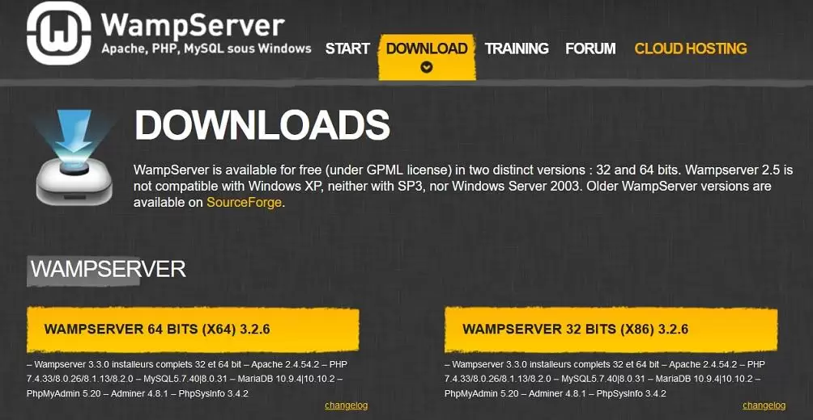
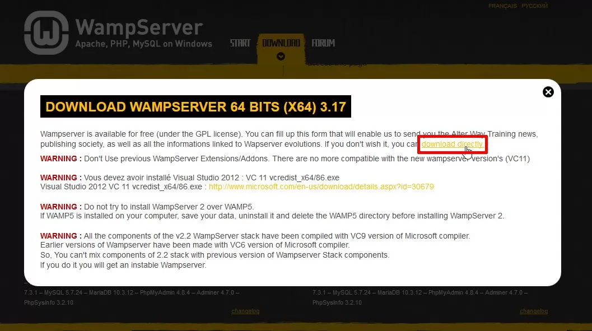
- Run the Installer:
- Once downloaded, open the installer file and run it as an administrator.
- Follow the on-screen instructions to complete the setup process.
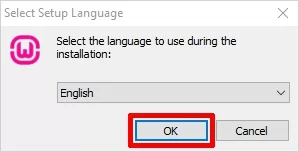
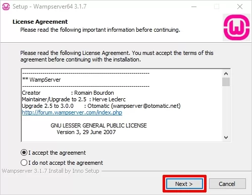
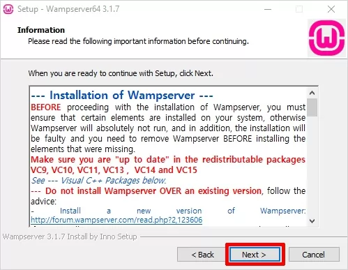
- Choose Installation Directory:
- Select a folder to install WAMP (default is usually
C:\wamp).
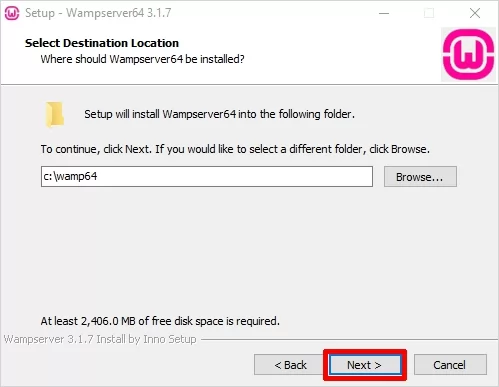
- Select a folder to install WAMP (default is usually
- Configure Settings:
- During installation, you may be prompted to choose a default browser. You can use the default or select another one by navigating to its location.
- WAMP also allows you to set a text editor (e.g., Notepad) for configuration files.
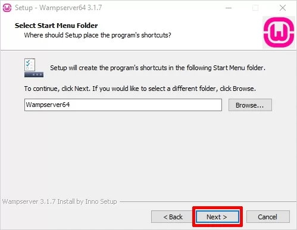
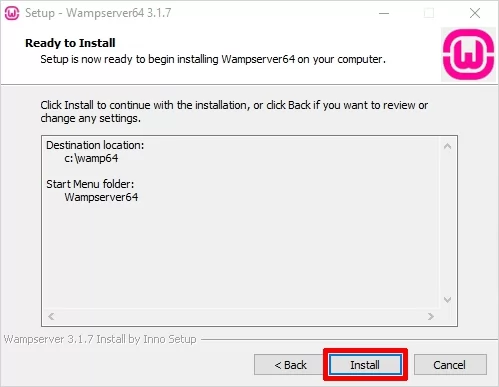
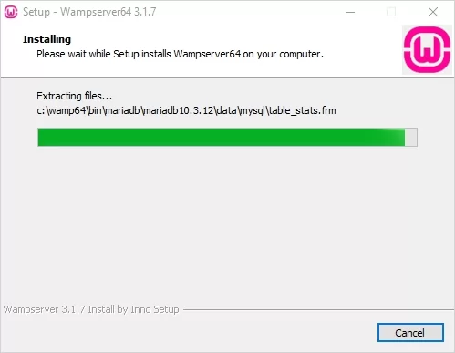
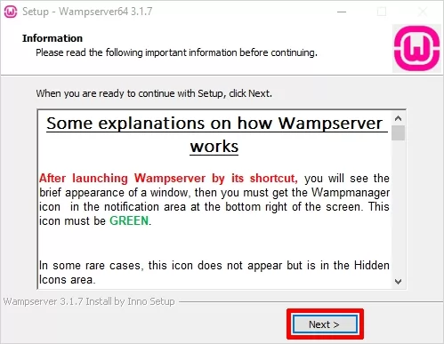
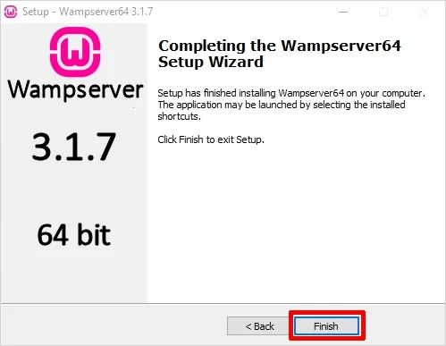
- Complete Installation:
- After installation is complete, launch WAMP by clicking on its icon from the Start Menu or Desktop.
- The WAMP icon will appear in the system tray. A green icon indicates that the server is running correctly.
Using WAMP:
- Accessing localhost: Open your browser and type
localhostor127.0.0.1to access the WAMP homepage. - Adding Projects: Place your web project files in the
wwwfolder within the WAMP installation directory. - Using phpMyAdmin: Access
phpMyAdminby visitinglocalhost/phpmyadminin your browser to manage MySQL databases.
Troubleshooting:
- Check Port Conflicts: Ensure that port 80 (used by Apache) is not in use by other software like Skype or IIS.
- Check WAMP Icon Color: The WAMP icon changes color to indicate status:
- Green: Server is running correctly.
- Orange: Some services are running, but not all.
- Red: Server is stopped; try restarting WAMP.
Once installed, WAMP allows you to develop and test web applications locally before deploying them to a live server.
How to Configure a PHP Environment
Configuring a PHP environment is essential for developing and testing PHP applications on your computer. This guide will walk you through setting up and configuring PHP with essential tools and configurations.
Step 1: Install PHP
We already discussed about installing previously See Here
Step 2: Configure PHP Environment Variables (Windows)
- Open the System Properties by searching for "Environment Variables" in the Windows search bar.
- Edit the PATH variable and add the path to your PHP folder (e.g.,
C:\php). - Open a new command prompt and type
php -vto confirm the installation.
Step 3: Configure the php.ini File
The php.ini file is the main configuration file for PHP. Here are some common
configurations:
- Enable Error Reporting: For development, enable error reporting by setting:
display_errors = On - Set Timezone: Configure your timezone:
date.timezone = "America/New_York" - Memory Limit: Set the maximum memory PHP can use:
memory_limit = 128M - File Uploads: Adjust the max file upload size if needed:
upload_max_filesize = 50M
Step 4: Install and Configure a Web Server
PHP needs to run on a web server, such as Apache or Nginx:
- Apache: If using WAMP or XAMPP, Apache is preconfigured. Add this to
httpd.conf:LoadModule php_module "C:/php/php8apache2_4.dll" - Nginx: Configure
nginx.confto point to your PHP processor.
Step 5: Test Your PHP Environment
- Create a new file in your web server's root directory named
info.php. - Add the following code to the file:
<?php phpinfo(); ?> - Open a browser and navigate to
http://localhost/info.phpto see the PHP info page, which confirms PHP is working.
Additional Tips:
- Enable Extensions: Enable necessary extensions (e.g., MySQL, cURL) by
uncommenting them in
php.ini. - Restart Server: After making changes to
php.ini, restart your server to apply the configurations. - Development vs. Production: Adjust configurations for security when moving to
production, such as setting
display_errors = Off.
Following these steps will help you set up and configure a PHP environment for local development, allowing you to build and test PHP applications efficiently.
Embedding PHP in a Web Page
PHP can be embedded within HTML to create dynamic web pages. PHP code is executed on the server, and the resulting output is sent to the browser. This guide explains how to include PHP in an HTML document.
Basic Syntax for Embedding PHP
PHP code is embedded within HTML using <?php ?> tags. Here’s a simple example:
<?php echo "Hello, World!"; ?>The above code will output "Hello, World!" to the web page when processed by the PHP server.
Example: Embedding PHP Within HTML
In practice, you can mix HTML and PHP code to display content dynamically. Here’s an example:
<html>
<head>
<title>PHP Embedded Page</title>
</head>
<body>
<h1>Welcome to My Website</h1>
<p>Today’s date is: <?php echo date("l, F j, Y"); ?></p>
<p>Here is a random number: <?php echo rand(1, 100); ?></p>
</body>
</html>In this example:
- Date Display: PHP generates the current date using the
date()function. - Random Number: PHP generates a random number with
rand().
Using PHP for Conditional Content
You can also use PHP to show different content based on conditions. For example:
<p>Welcome, <?php
if (date("H") < 12) {
echo "Good Morning!";
} else {
echo "Good Afternoon!";
}
?></p>Tips for Embedding PHP in Web Pages
- Save as .php: Make sure to save the file with a
.phpextension for the server to process PHP code. - Use Echo for Output: PHP code can print text to the HTML output using
echoorprint. - Server Requirement: PHP code will only execute on a server configured to run PHP (e.g., a WAMP, LAMP, or XAMPP server).
Embedding PHP in HTML allows you to create dynamic content, enhancing the functionality and interactivity of web pages.
Understanding PHP Tokens
In PHP, a token is the smallest unit of a program, including keywords, identifiers, operators, and punctuation. Understanding tokens is essential for grasping how PHP code is parsed and executed.
Types of Tokens in PHP
PHP tokens can be categorized into several types:
1. Keywords
Keywords are reserved words in PHP that have special meanings and are used to perform various functions. Examples include:
if, else, while, for, function, return2. Identifiers
Identifiers are names given to variables, functions, classes, and other entities. They must start with a letter or an underscore. Examples:
$name, $age, getDetails()3. Constants
Constants are fixed values that cannot be changed during script execution. Examples include numerical, string, and predefined constants:
10, "Hello", PHP_VERSIONRead more about constants : See Here
4. Operators
Operators are symbols that perform operations on variables and values. PHP has various types of operators:
- Arithmetic Operators:
+, -, *, / - Comparison Operators:
==, !=, <, > - Logical Operators:
&& (and), || (or), ! (not)
Read more about Operators : See Here
5. Separators (Punctuation)
Separators, also known as delimiters or punctuation, are symbols used to structure PHP code. Examples include:
; , . ( ) { } [ ]6. Comments
Comments are non-executable lines in PHP used to describe the code. They come in single-line and multi-line forms:
// Single-line comment
/* Multi-line comment */Read more about Comments : See Here
Examples of PHP Tokens in Code
Let’s look at a PHP code snippet to identify various tokens:
<?php
$number = 10; // $number and 10 are tokens
if ($number > 5) { // if, $, >, { are tokens
echo "Greater"; // echo and "Greater" are tokens
}
?>In this example:
ifis a keyword.$numberis an identifier.10is a constant.>is an operator.{and}are separators.
Summary
PHP tokens form the building blocks of any PHP script, helping define the structure and logic. Recognizing and understanding these tokens makes it easier to write and interpret PHP code effectively.
Understanding Variables in PHP
In PHP, a variable is a container for storing data values. Variables are essential for managing information in a program, allowing you to store, manipulate, and retrieve data.
Defining Variables
Variables in PHP are defined using the dollar sign ($) followed by the variable name. The syntax is as follows:
$variableName = value;Variable Naming Rules
When naming variables, you must follow certain rules:
- Must start with a letter or an underscore (
_). - Can contain letters, numbers, and underscores.
- Cannot contain spaces or special characters.
- Case-sensitive (e.g.,
$Varand$varare different).
Examples of Variable Declaration
Here are some examples of variable declarations in PHP:
$name = "John"; // String variable
$age = 25; // Integer variable
$height = 5.9; // Float variable
$isStudent = true; // Boolean variableUsing Variables
Once defined, variables can be used in expressions, functions, and output. Here’s an example:
<?php
$name = "Alice";
$age = 30;
echo "Name: " . $name . "<br>Age: " . $age; // Output: Name: Alice, Age: 30
?>Variable Scope
The scope of a variable determines where it can be accessed within the code. PHP has three main variable scopes:
- Global: Variables defined outside functions and accessible globally.
- Local: Variables defined within a function and accessible only within that function.
- Static: Local variables that maintain their value between function calls.
Read more about Variables Scope : See Here
Conclusion
Variables are a fundamental concept in PHP, allowing developers to store and manipulate data effectively. Understanding how to declare, use, and manage variables is crucial for building dynamic PHP applications.
Understanding Variable Scope in PHP
Variable scope determines the visibility and lifetime of a variable within your PHP code. Understanding variable scope is crucial for effective programming and debugging.
Types of Variable Scope
PHP has three main types of variable scope:
1. Global Scope
Variables declared outside of any function or class have global scope. They can be accessed from anywhere in the script, but not inside functions unless declared as global within the function:
<?php
$globalVar = "I am global"; // Global variable
function testGlobal() {
global $globalVar; // Declare global variable
echo $globalVar; // Access global variable
}
testGlobal(); // Output: I am global
?>2. Local Scope
Variables declared inside a function have local scope. They can only be accessed within that function:
<?php
function testLocal() {
$localVar = "I am local"; // Local variable
echo $localVar; // Accessible within the function
}
testLocal(); // Output: I am local
// echo $localVar; // This will cause an error since $localVar is not accessible here.
?>3. Static Scope
Static variables retain their value even after the function has finished executing. They are declared using the static keyword:
<?php
function countCalls() {
static $count = 0; // Static variable
$count++;
echo "This function has been called $count times.<br>";
}
countCalls(); // Output: This function has been called 1 times.
countCalls(); // Output: This function has been called 2 times.
?>Variable Scope and Superglobals
PHP also provides superglobals, which are built-in global arrays accessible from any scope. Common superglobals include:
$_GET$_POST$_SESSION$_COOKIE$_FILES$_SERVER
Superglobals can be accessed without the need for the global keyword.
Summary
Understanding variable scope in PHP helps manage the visibility and lifespan of variables effectively. By recognizing the differences between global, local, and static scopes, as well as utilizing superglobals, you can write more efficient and organized PHP code.
Understanding Constants in PHP
A constant is a simple value that cannot be changed during the execution of a script. Constants are beneficial for defining values that remain unchanged throughout your application, enhancing code readability and maintainability.
Defining Constants
Constants in PHP can be defined using the define() function. The syntax is as follows:
define("CONSTANT_NAME", value);Examples of Defining Constants
Here are examples of defining constants:
<?php
define("SITE_NAME", "My Awesome Website");
define("MAX_USERS", 100);
define("PI", 3.14159);
?>Using Constants
Once defined, constants can be used throughout your script. Unlike variables, constants do not require the dollar sign ($) prefix:
<?php
echo "Welcome to " . SITE_NAME; // Output: Welcome to My Awesome Website
echo "<br>Maximum users allowed: " . MAX_USERS; // Output: Maximum users allowed: 100
?>Characteristics of Constants
- Immutable: Once defined, the value of a constant cannot be changed.
- Global Scope: Constants are automatically global across the entire script and can be accessed from any function or class.
- No Dollar Sign: Constants do not require a dollar sign (
$) when being used.
Case Sensitivity
By default, constant names are case-sensitive. However, you can define a constant as case-insensitive by passing a third argument to the define() function:
define("MY_CONSTANT", "Value", true); // Case-insensitive constantThis allows you to access it using either MY_CONSTANT or my_constant.
Predefined Constants
PHP also provides a number of predefined constants that are built into the language, such as:
PHP_VERSION: Current PHP version.PHP_OS: Operating system PHP is running on.__LINE__: Current line number of the file.__FILE__: Full path and filename of the file.
These constants can be used without any additional definition.
Conclusion
Constants in PHP are a powerful feature that allows you to define immutable values for use throughout your script. They enhance code clarity and maintainability, making it easier to manage values that should remain constant during execution.
Understanding Data Types in PHP
Data types in PHP define the type of data a variable can hold. PHP is a loosely typed language, meaning you don’t need to declare a variable’s type explicitly; it automatically converts the type based on the value assigned. However, understanding data types is essential for effective programming and ensuring data integrity.
Basic Data Types
PHP has four main scalar data types and two compound data types:
1. Scalar Data Types
| Data Type | Description | Example |
|---|---|---|
| Integer | Whole numbers without decimal points. | 42 |
| Float | Numbers with decimal points. | 3.14 |
| String | A sequence of characters enclosed in quotes. | "Hello, World!" |
| Boolean | Represents two possible values: true or false. |
true |
2. Compound Data Types
| Data Type | Description | Example |
|---|---|---|
| Array | A collection of values of any data type. | $fruits = array("Apple", "Banana", "Cherry"); |
| Object | An instance of a class containing properties and methods. | $myCar = new Car("red"); |
Type Casting
PHP allows you to convert one data type into another using type casting. Here are some common examples:
$num = "10"; // String
$intValue = (int)$num; // Cast to Integer
$floatValue = (float)$num; // Cast to Float
Checking Data Types
You can check the data type of a variable using the gettype() function or the var_dump() function:
<?php
$var = 42;
echo gettype($var); // Output: integer
var_dump($var); // Output: int(42)
?>Type Juggling
PHP automatically converts data types when necessary, a feature known as type juggling. For example:
<?php
$number = "10"; // String
$result = $number + 5; // Automatically converted to integer
echo $result; // Output: 15
?>Conclusion
Understanding data types in PHP is crucial for writing efficient and bug-free code. While PHP's flexibility with types makes it easier to work with, knowing how to properly handle and convert data types will enhance your programming skills.
Understanding Operators in PHP
Operators are special symbols that perform operations on variables and values. PHP supports various types of operators that can be classified into several categories.
1. Arithmetic Operators
Arithmetic operators are used to perform basic mathematical operations:
| Operator | Operation | Example |
|---|---|---|
+ |
Addition | $a + $b |
- |
Subtraction | $a - $b |
* |
Multiplication | $a * $b |
/ |
Division | $a / $b |
% |
Modulus | $a % $b |
2. Assignment Operators
Assignment operators are used to assign values to variables:
| Operator | Operation | Example |
|---|---|---|
= |
Assigns the value on the right to the variable on the left | $a = 5 |
+= |
Add and assign | $a += 3; // $a is now 8 |
-= |
Subtract and assign | $a -= 2; // $a is now 6 |
*= |
Multiply and assign | $a *= 4; // $a is now 24 |
/= |
Divide and assign | $a /= 3; // $a is now 8 |
3. Comparison Operators
Comparison operators are used to compare two values:
| Operator | Operation | Example |
|---|---|---|
== |
Equal to | $a == $b |
=== |
Identical to | $a === $b |
!= |
Not equal to | $a != $b |
!== |
Not identical to | $a !== $b |
> |
Greater than | $a > $b |
< |
Less than | $a < $b |
>= |
Greater than or equal to | $a >= $b |
<= |
Less than or equal to | $a <= $b |
4. Logical Operators
Logical operators are used to combine conditional statements:
| Operator | Operation | Example |
|---|---|---|
&& |
Logical AND | ($a > 0) && ($b > 0) |
|| |
Logical OR | ($a > 0) || ($b > 0) |
! |
Logical NOT | !($a > 0) |
5. String Operators
String operators are used to concatenate strings:
| Operator | Operation | Example |
|---|---|---|
. |
Concatenation | $a . $b |
.= |
Concatenate and assign | $a .= $b; // $a becomes the concatenation of $a and $b |
Conclusion
Operators in PHP are essential for performing various operations on data. Understanding the different types of operators allows you to manipulate data effectively and write robust PHP scripts.
Understanding Comments in PHP
Comments in PHP are non-executable lines in the code. They are meant for documentation and explanation purposes, helping developers understand the code. Comments can explain what a section of code does, provide context, and clarify complex logic.
Types of Comments in PHP
PHP supports three types of comments:
| Type | Syntax | Description | Example |
|---|---|---|---|
| Single-line Comment | // or # |
Single-line comments start with // or # and continue to the end of the line. |
// This is a single-line comment# Another single-line comment
|
| Multi-line Comment | /* ... */ |
Multi-line comments start with /* and end with */, allowing comments over multiple lines. |
/*
|
Using Comments in PHP Code
Comments are helpful in explaining the functionality and logic of the code. They are ignored by the PHP interpreter and do not affect the execution.
Here’s how you might use comments in PHP:
<?php
// This is a single-line comment explaining the variable assignment
$number = 10;
/*
This is a multi-line comment.
It explains a block of code in more detail.
It can span multiple lines.
*/
$result = $number * 2; // This calculates the doubled value
?>Best Practices for Comments
- Use comments to explain complex or non-intuitive code.
- Avoid over-commenting simple or self-explanatory code.
- Maintain consistency in comment style throughout your codebase.
- Update comments if code changes to prevent outdated or incorrect explanations.
Conclusion
Comments are essential for writing clear, understandable, and maintainable code. By using comments effectively, you can make your code more accessible to others and easier to understand over time.
Understanding echo in PHP
The echo statement in PHP is used to output text, variables, HTML markup, and other content to the web page. It is one of the most common ways to display information in PHP.
Syntax
The syntax for echo is straight forward. Here is a basic example:
<?php
echo "Hello, World!";
?>This code will output the text Hello, World! to the browser.
Using echo with Variables
You can also use echo to display the value of variables. For example:
<?php
$name = "John";
echo "Hello, " . $name . "!";
?>This will output Hello, John! by concatenating the variable $name with the string.
Combining HTML and echo
The echo statement can also output HTML content. For instance:
<?php
echo "<h2>Welcome to my website!</h2>";
echo "<p>This is a paragraph.</p>";
?>This PHP code will display an <h2> heading and a <p> paragraph on the web page.
Using echo Without Parentheses
Unlike functions, echo does not require parentheses:
<?php
echo "Hello, World!";
?>However, if you prefer, you can also use parentheses:
<?php
echo("Hello, World!");
?>Both methods work the same way.
Outputting Multiple Parameters
With echo, you can pass multiple arguments separated by commas:
<?php
echo "Hello", " ", "World", "!";
?>This will output Hello World!. Note that this only works with echo and not with print.
Conclusion
The echo statement is a versatile and essential tool for displaying output in PHP. By combining echo with variables and HTML tags, you can create dynamic content for your web pages.
Understanding the print Statement in PHP
The print statement in PHP is used to output text, variables, HTML markup, and other content to the web page. While similar to echo, print has some distinct characteristics.
Syntax
The syntax for print is simple, and here is an example:
<?php
print "Hello, World!";
?>This code will output the text Hello, World! to the browser.
Difference Between echo and print
printreturns a value (1), so it can be used in expressions.echodoes not return a value.printcan only take one argument, whileechocan take multiple arguments.
Using print with Variables
Just like echo, print can display variables:
<?php
$name = "Alice";
print "Hello, " . $name . "!";
?>This will output Hello, Alice! by concatenating the variable $name with the string.
Combining HTML and print
The print statement can also output HTML content. For instance:
<?php
print "<h2>Welcome to My Website!</h2>";
print "<p>This is a paragraph.</p>";
?>This PHP code will display an <h2> heading and a <p> paragraph on the web page.
Using print with Parentheses
Unlike functions, print does not require parentheses:
<?php
print "Hello, World!";
?>However, you can also use parentheses:
<?php
print("Hello, World!");
?>Both methods work the same way.
Using print in Expressions
Since print returns a value, you can use it within expressions:
<?php
$result = (print "Hello!") + 5;
print "<p>The result is $result</p>";
?>This will output Hello! followed by The result is 6 since print returns 1.
Conclusion
The print statement in PHP is useful for outputting text and variables, especially in cases where a return value is helpful. By understanding how to use print, you can display content dynamically on your PHP web pages.
Understanding Branching Statements in PHP
Branching statements, also known as conditional statements, allow your code to make decisions based on certain conditions. They are essential for creating dynamic behavior in PHP programs.
If Statement
The if statement checks a condition and executes code if the condition is true.
<?php
$age = 18;
if ($age >= 18) {
echo "You are eligible to vote.";
}
?>In this example, if $age is 18 or greater, it will print You are eligible to vote..
If-Else Statement
The if-else statement provides an alternative path if the if condition is false.
<?php
$score = 75;
if ($score >= 50) {
echo "You passed.";
} else {
echo "You failed.";
}
?>If $score is 50 or higher, it will print You passed. Otherwise, it will print You failed.
If-Elseif-Else Statement
The if-elseif-else statement checks multiple conditions sequentially.
<?php
$grade = 85;
if ($grade >= 90) {
echo "A";
} elseif ($grade >= 80) {
echo "B";
} elseif ($grade >= 70) {
echo "C";
} else {
echo "F";
}
?>This code checks each condition, outputting the grade based on the $grade value.
Switch Statement
The switch statement is useful for checking one variable against multiple possible values.
<?php
$day = "Wednesday";
switch ($day) {
case "Monday":
echo "Start of the week!";
break;
case "Wednesday":
echo "Midweek day!";
break;
case "Friday":
echo "Almost weekend!";
break;
default:
echo "Have a nice day!";
}
?>This code will output Midweek day! since the value of $day is Wednesday.
Alternative Syntax for Control Structures
PHP also provides an alternative syntax for branching statements that’s often used in templates:
<?php if ($age >= 18): ?>
<p>You are eligible to vote.</p>
<?php else: ?>
<p>You are not eligible to vote.</p>
<?php endif; ?>This alternative syntax is helpful for readability, especially in HTML-heavy PHP files.
Conclusion
Branching statements are essential for creating logic and decision-making in PHP programs. By using if, if-else, if-elseif-else, and switch statements, you can control the flow of your code based on specific conditions.
Understanding Looping Statements in PHP
Looping statements allow you to execute a block of code multiple times. In PHP, there are several types of loops, each useful in different scenarios.
while Loop
The while loop runs as long as a specified condition is true.
<?php
$count = 1;
while ($count <= 5) {
echo "Count: $count<br>";
$count++;
}
?>This loop will output Count: 1 to Count: 5, incrementing the count each time until the condition is no longer true.
do-while Loop
The do-while loop is similar to while but guarantees at least one execution of the code block.
<?php
$count = 1;
do {
echo "Count: $count<br>";
$count++;
} while ($count <= 5);
?>This loop also outputs Count: 1 to Count: 5, but will always run at least once, even if the condition is initially false.
for Loop
The for loop is commonly used for a specific number of iterations, with a counter that is initialized, tested, and updated in one line.
<?php
for ($i = 1; $i <= 5; $i++) {
echo "Iteration: $i<br>";
}
?>This loop will output Iteration: 1 to Iteration: 5, incrementing $i after each loop iteration.
foreach Loop
The foreach loop is designed to work with arrays, iterating over each element in the array.
<?php
$colors = array("Red", "Green", "Blue");
foreach ($colors as $color) {
echo "Color: $color<br>";
}
?>This loop will output Color: Red, Color: Green, and Color: Blue, iterating over each element in the $colors array.
Loop Control Statements
PHP includes control statements to manage loop flow:
break: Exits the loop entirely.continue: Skips the current iteration and moves to the next one.
Examples:
<?php
// Using break
for ($i = 1; $i <= 5; $i++) {
if ($i == 3) break;
echo "Iteration: $i<br>";
}
// Using continue
for ($i = 1; $i <= 5; $i++) {
if ($i == 3) continue;
echo "Iteration: $i<br>";
}
?>The first loop will stop at Iteration: 2 due to break, and the second loop will skip Iteration: 3 due to continue.
Conclusion
Looping statements in PHP enable repetitive tasks, whether by using while, do-while, for, or foreach. Loop control statements like break and continue offer additional flexibility for more complex tasks.